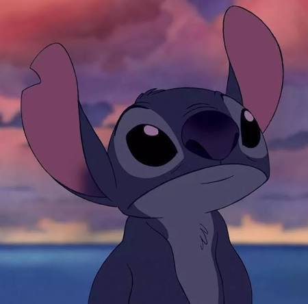
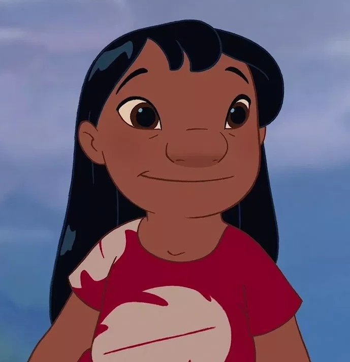
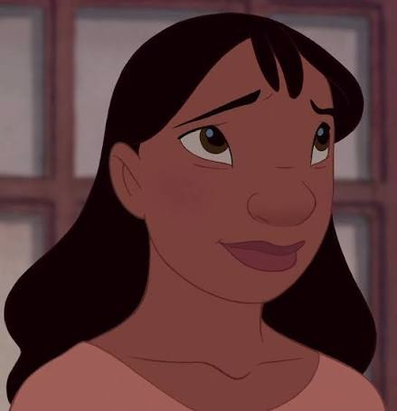
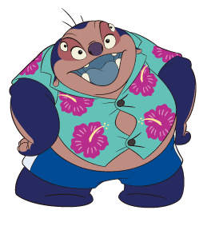
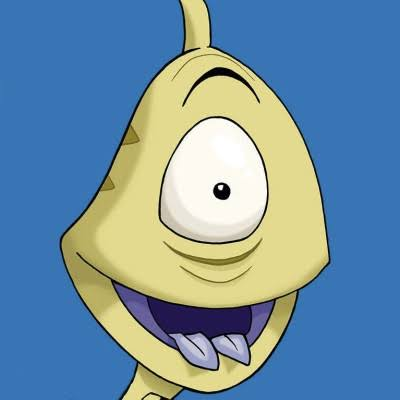
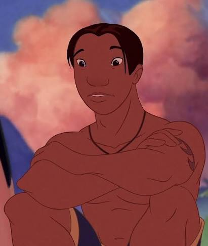

Conoce a uno de los personajes más queridos de Disney y descubre su historia, su familia, sus aventuras y el significado de "Ohana".
🌴 Explorar la historiaGran parte de la historia de Lilo y Stitch ocurre en Hawái. Sus paisajes, playas, música y cultura forman parte importante de la aventura.
Stitch es un pequeño extraterrestre creado mediante experimentos científicos. Al principio fue diseñado para causar problemas, pero su vida cambia cuando conoce a Lilo.
Con el tiempo aprende sobre la amistad, la responsabilidad y el significado de tener una familia.

Es curioso, travieso y muy fuerte. Aunque al principio causa problemas, aprende a valorar a las personas que quiere.

Es una niña creativa, divertida y con una gran imaginación. Ella ayuda a Stitch a descubrir el significado de una familia.

Es la hermana mayor de Lilo y se preocupa mucho por ella. Intenta mantener unida a su pequeña familia.

Es un científico relacionado con la creación de Stitch y con muchos de los experimentos.

Es un personaje divertido que acompaña a Jumba durante sus aventuras en la Tierra.

Es una persona amable y aventurera que apoya a Nani y a Lilo en diferentes momentos.
Stitch no es el único experimento creado por Jumba. En la historia aparecen muchos otros experimentos con habilidades y características diferentes.
Stitch es conocido como el Experimento 626 y posee una combinación extraordinaria de habilidades.
Existen numerosos experimentos con poderes y personalidades completamente diferentes.
Los experimentos pueden tener capacidades especiales creadas para diferentes propósitos.
La idea de Ohana es uno de los temas principales de la historia. Representa la importancia de cuidar, respetar y permanecer junto a las personas que consideramos parte de nuestra familia.
La historia de Lilo y Stitch muestra que una familia también puede formarse mediante la amistad, el cariño y el apoyo entre las personas.
Lilo y Stitch desarrollan una amistad que cambia la vida de ambos.
La historia destaca la importancia de cuidar a quienes forman parte de nuestra vida.
Stitch aprende que no tiene que estar solo y que puede encontrar personas que lo acepten.
Los personajes muestran que una persona puede aprender y cambiar con el tiempo.
Stitch llega a la Tierra después de escapar y termina encontrándose con Lilo.
Lilo decide adoptar a Stitch y comienza una etapa completamente nueva para ambos.
Los personajes viven diferentes situaciones mientras intentan mantener unida a su familia.
Stitch y sus amigos conocen nuevos lugares, personajes y experimentos.
La ambientación hawaiana es una parte importante de la identidad de la historia.
Stitch es identificado por el número 626.
Su apariencia pequeña contrasta con sus sorprendentes habilidades.
La música y los elementos de la cultura hawaiana acompañan muchas escenas.
Las playas y paisajes tropicales son parte importante del ambiente de la historia.
La familia y el cariño son dos de los temas centrales de la historia.
Stitch es mucho más que un personaje divertido. Su historia muestra cómo alguien que se siente diferente puede encontrar un lugar al que pertenecer.
La amistad entre Lilo y Stitch enseña que una familia puede mantenerse unida mediante el cariño, la confianza y el apoyo.